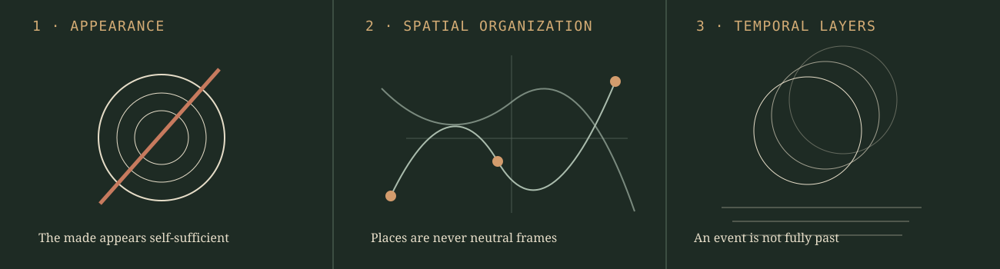
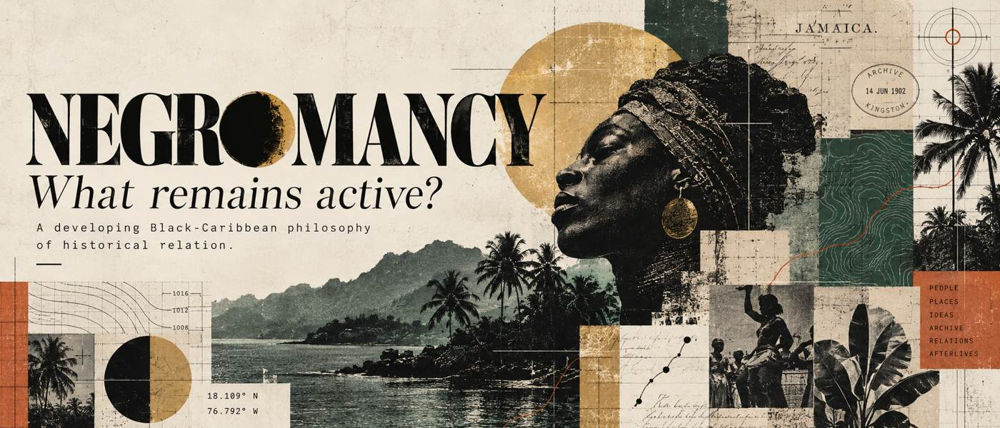
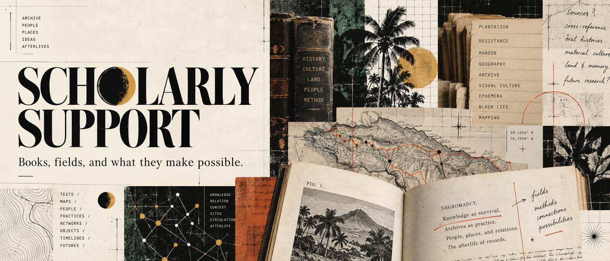
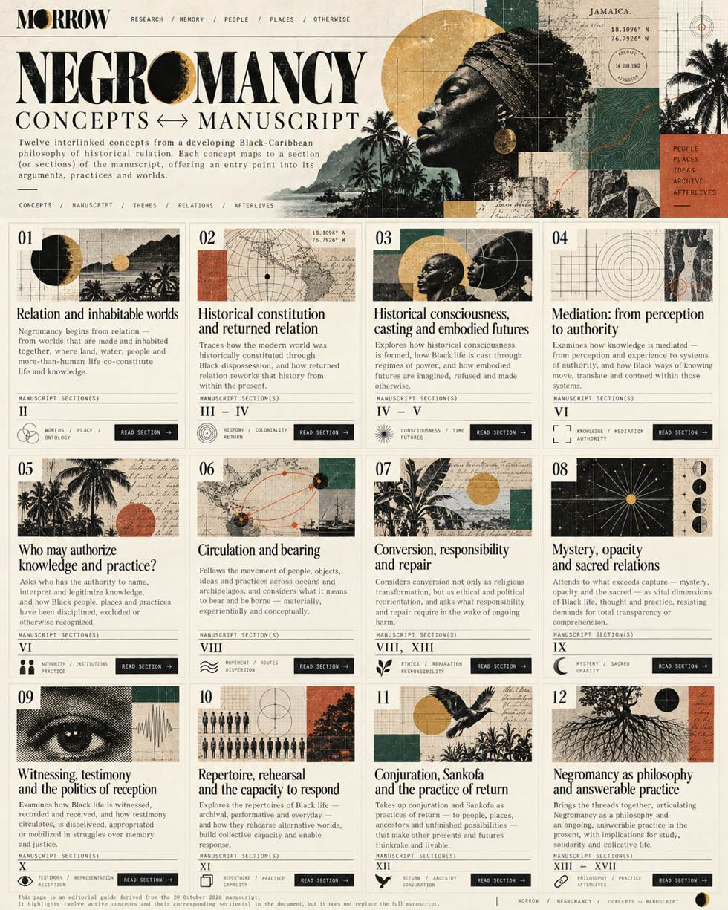
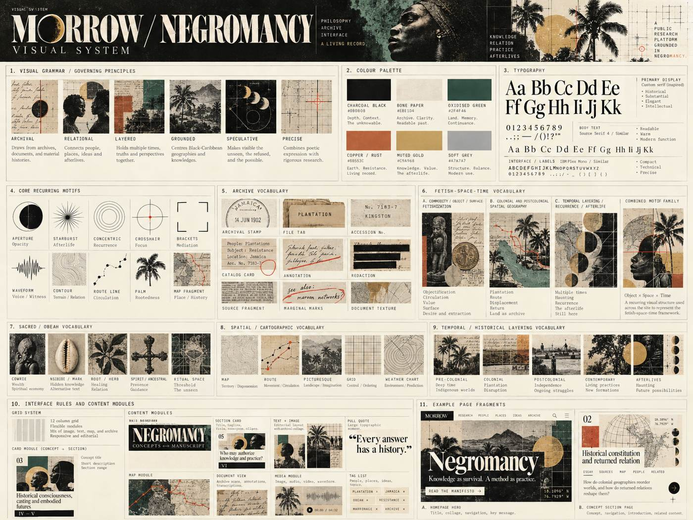
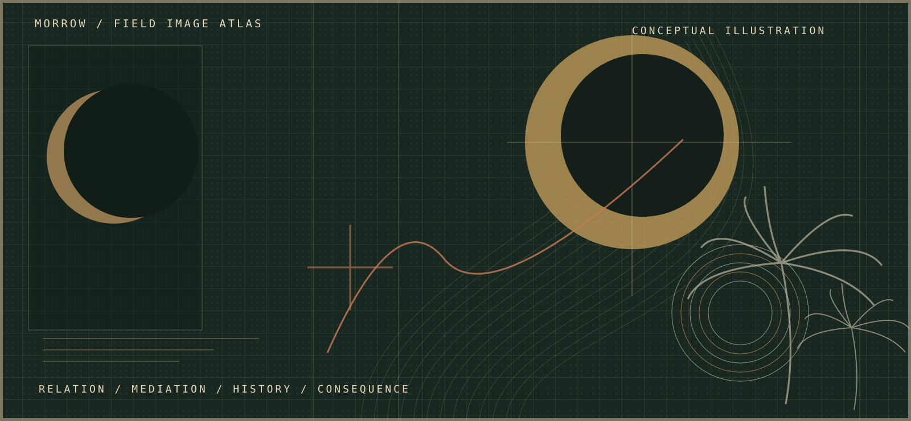
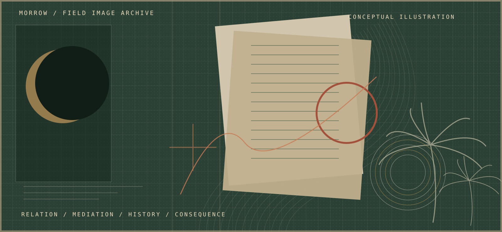
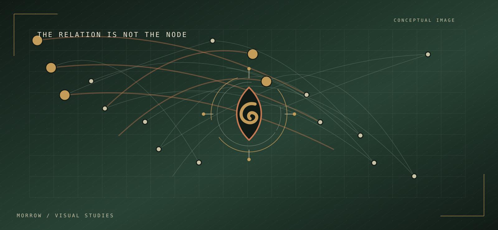
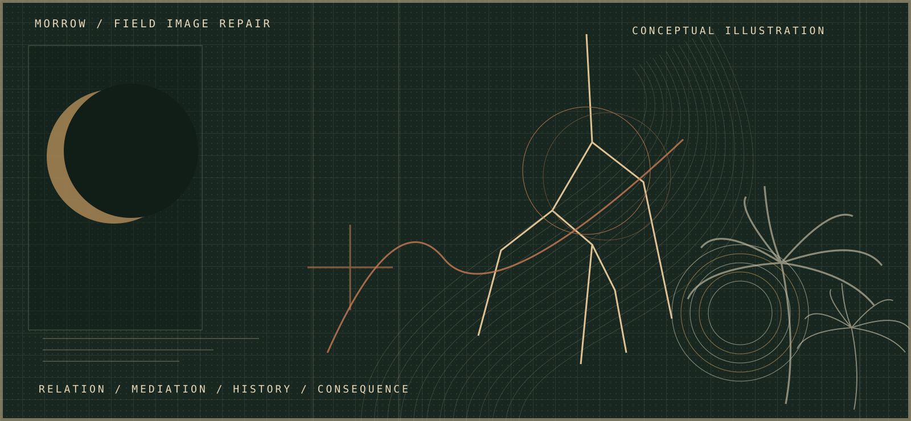

Opacity
A partially obscured circle marks an unavailable view or limit of possession; it must not stand for missing evidence without qualification.
Enter this record ↗The visual system is not decoration. Its marks help readers distinguish sources from interpretations, relations from imagined links, and appearance from historically produced conditions.
A partially obscured circle marks an unavailable view or limit of possession; it must not stand for missing evidence without qualification.
Enter this record ↗Connections identify pathways to test, documented movements to trace or dependencies among bodies, institutions and places.
Enter this record ↗Uneven load and nested frames call attention to maintenance, cost distribution and repair.
Enter this record ↗Source, interpretation, uncertainty and revision have distinct visual labels and provenance requirements.
Enter this record ↗Repeated, displaced forms distinguish different periods without implying they are identical.
Enter this record ↗Overlapping but non-identical marks distinguish one model's record from another's encounter.
Enter this record ↗The restricted philosophical proposal informs a specific motif family: apparent autonomy of an object or category; the spatial organization of colonial and postcolonial relations; and historical layers through which that appearance is reproduced or transformed.

For the historical Obeah inquiry, a colonial category, enforcement geography and the period of its later transformations should appear as distinguishable layers. The site must never invent sacred iconography or treat generated stamps and maps as genuine records.
These are the original approved collage studies, now published as optimized site artwork. They work alongside the vector diagrams. The portraits, stamps and old-document fragments are generated illustrations, not independent historical evidence.






Editorial SVG illustration. Not an archival facsimile or historical photograph.

Editorial SVG illustration. Not an archival facsimile or historical photograph.

Editorial SVG illustration. Not an archival facsimile or historical photograph.

Editorial SVG illustration. Not an archival facsimile or historical photograph.

Editorial SVG illustration. Not an archival facsimile or historical photograph.

Editorial SVG illustration. Not an archival facsimile or historical photograph.
The five original archival collages are now hosted as optimized JPG images; the original PNG masters remain separate. The SVG families add scalable diagrammatic elements. These are artistic studies, not source documents.